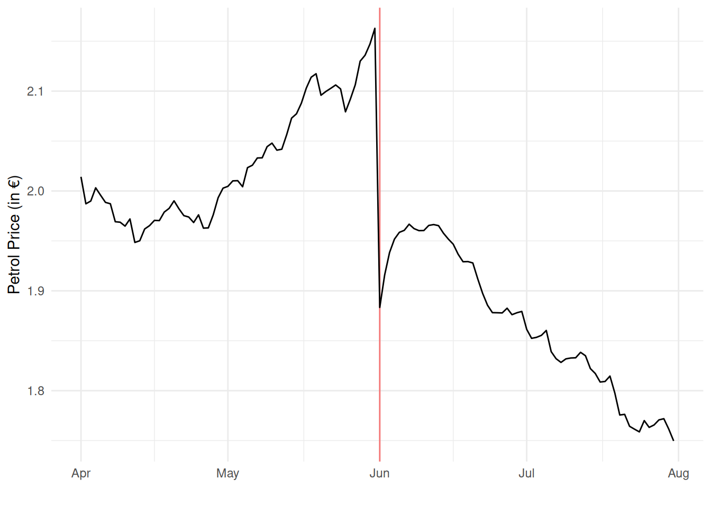
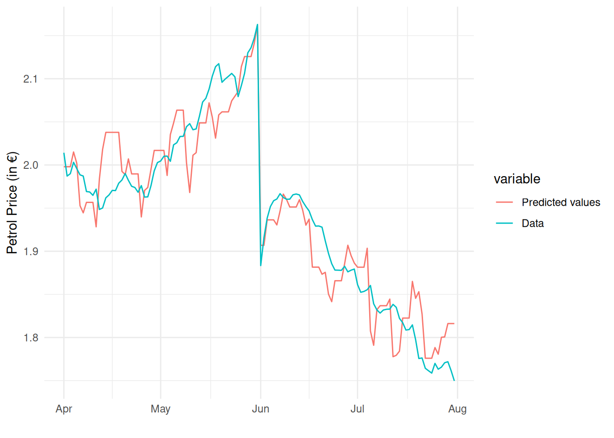
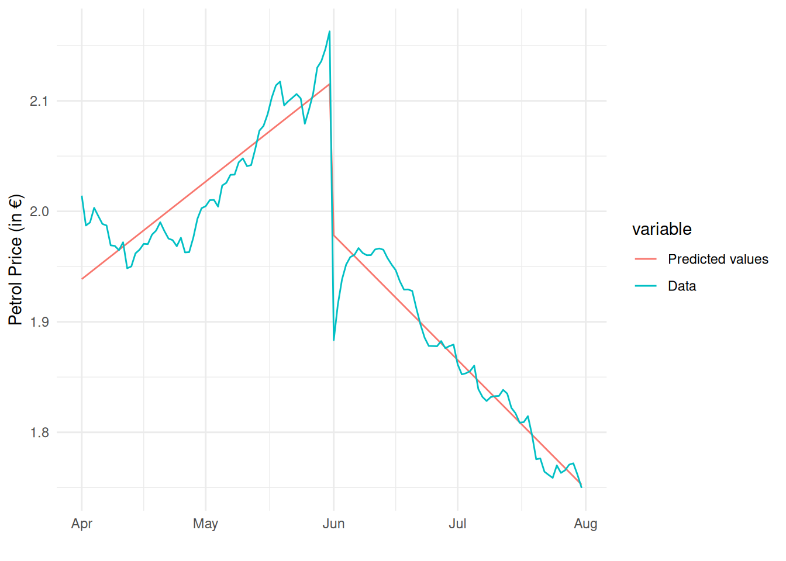

Statistics 2 2022/23 Exam
Introduction
The year 2022 has seen enormous fluctuations in energy prices. The price of gasoline (petrol) is one of these that has changed price a lot over the last year. To reduce the financial burden on households, the German government reduced the excise duty on unleaded petrol by 29.55 cents starting on June 1, 2022. This excise duty is the tax the government places on a liter of petrol, which went from 65.45 cents down to 35.9 cents. This excise duty reduction had a large impact on the price of petrol, which can be seen by plotting the petrol price over time:
When the excise duty fell, petrol stations were not forced to reduce the price of petrol by the full amount. You have been tasked by the government to study how much the excise tax affects the price of petrol. You are given a data set which contains the average petrol price (averaged over all petrol stations in the country in a day), the excise duty, and Brent Crude oil price for each day between April 1 and July 31. The variable names and their descriptions are:
date: The date in format yyyy-mm-dd.petrol: The average daily petrol price for E5 petrol (€ per liter) on that date.duty: The excise duty on E5 petrol (€ per liter)oil: The daily Brent Crude oil price (€ per barrel)
Question 1
What is the sample correlation coefficient between the price of petrol and the excise duty on petrol?
Question 2
Choose the answer below which best represents the interpretation of the correlation in the previous question, where r represents your answer to the previous question.
- A €1 increase in the excise duty on average leads to an increase in the price of petrol by r euros.
- The excise duty data explains r% of the data on petrol prices.
- There is a strong positive linear relationship between the price of petrol and the excise duty on it.
- The correlation depends on the units of the variables used to calculate it and is therefore difficult to interpret.
Model 1
Estimate a simple linear regression model explaining the price of petrol by the excise duty.
Question 3
Your boss asks you to interpret the regression intercept. Choose the answer below which best represents how you should interpret the regression intercept for this particular dataset.
- An increase in the excise duty of €1 per liter would on average lead to an increase in the petrol price of €1.67 per liter.
- If the government would set the excise duty to zero, the price of petrol would become exactly €1.67 per liter. This prediction is reliable because the intercept is individually significant at the 1% level.
- An increase in the petrol price of €1 per liter would on average lead to an increase in the excise duty of €1.67 per liter.
- Because we don’t observe the excise duty at or near zero, we should be cautious when interpreting the intercept. In this case its prediction is unreliable.
Question 4
Report the sample regression slope.
Question 5
Test the following claim: if the excise duty fell by €1, then the price of petrol would fall by more than 50 cents on average. Use a significance level of 5%.
- What is the null hypothesis? \beta_1 </\leq/>/\geq/=/\neq \underline{\hspace{20mm}} (choose one comparison operator and fill in a value in the blank).
- What is the alternative hypothesis? \beta_1 </\leq/>/\geq/=/\neq \underline{\hspace{20mm}} (choose one comparison operator and fill in a value in the blank).
- The test statistic T=(B_1-b)/S_{B_1} follows a t distribution with n/k/n-1/n-2/n-k (choose one) degrees of freedom under H_0/H_1 (choose one).
- What is the value of the test statistic? \underline{\hspace{20mm}}
- What is the critical value? \underline{\hspace{20mm}}
- Therefore, (choose an option below):
- We reject, there is sufficient evidence that it would fall by more than 50 cents on average.
- We don’t reject, there is sufficient evidence that it would fall by more than 50 cents on average.
- We reject, there is insufficient evidence that it would fall by more than 50 cents on average.
- We don’t reject, there is insufficient evidence that it would fall by more than 50 cents on average.
Model 2
Estimate a simple linear regression model explaining the price of petrol with the price of Brent crude oil.
Question 6
Use a t-test to test the following null and alternative hypotheses:
\begin{split} H_0:\,& \beta_1 = 0 \\ H_1:\,& \beta_1 \neq 0 \end{split}
Assume for this question that the model assumptions hold. Use a significance level of 5%.
- What is the value of the test statistic? \underline{\hspace{20mm}}
- What is the test’s p-value? \underline{\hspace{20mm}}
- What is the conclusion? Choose an option below:
- p\leq \alpha; the model is useful.
- p> \alpha; the model is useful.
- p\leq \alpha; the model is useless.
- p> \alpha; the model is useless.
Question 7
Choose the correct options out of the options in bold below:
In a line plot of the residuals there is an increasing/a decreasing/no trend (choose one) in the first 60 time periods. This is an indication that linearity/homoskedasticity/normality/independence (choose one) holds/is violated (choose one).
In a scatter plot of the residuals against the Brent Crude oil price, all the residuals are positive/negative/zero (choose one) when the Brent Crude oil price is below €105 per barrel. This is an indication that linearity/homoskedasticity/normality/independence (choose one) holds/is violated (choose one).
In a histogram of the residuals, the bins of residuals deviate significantly from the fitted normal curve/line up very closely with the fitted normal curve (choose one). Therefore linearity/homoskedasticity/normality/independence (choose one) holds/is violated (choose one).
Model 3
You think that the poor performance of the oil model is related to the fact that the excise duty changed so much half-way through the sample. You decide to make an improved model that combines the excise duty and the oil price to explain the petrol price.
Regress the variable petrol on the variables:
dutyoil
If you did this correctly, your estimated intercept should be 0.594.
Question 8
In the multiple linear regression model of the petrol price regressed on the variables (i) duty and (ii) oil, which variables are individually significant at the 1% level?
Question 9
Choose the answer below that best represents the interpretation of the estimated coefficient on excise duty:
- If the excise duty increases by 1 cent, then the price of petrol will increase by 0.77 cents.
- If the excise duty increases by 1 cent, then the price of petrol will increase by 0.77 cents on average.
- If the excise duty increases by 1 cent, then holding the Brent Crude oil price fixed, the price of petrol will increase by 0.77 cents.
- If the excise duty increases by 1 cent, then holding the Brent Crude oil price fixed, the price of petrol will increase by 0.77 cents on average.
Question 10
If the price of a barrel of oil increased by €10 while the excise duty remained fixed, by how many cents would the price of petrol be expected to increase according to the model?
Question 11
Report a 95% confidence interval for \beta_1 (the coefficient on the excise duty).
- Lower bound: \underline{\hspace{20mm}}
- Upper bound: \underline{\hspace{20mm}}
Question 12
The 95% confidence interval for the coefficient on Brent Crude oil is [0.007513, 0.009452]. Choose the answer below which best explains the interpretation of this confidence interval.
- We are 95% confident that the population \beta_2 is between 0.007513 and 0.009452.
- We are 95% confident that the estimator B_2 is between 0.007513 and 0.009452.
- We are 95% confident that the sample estimate b_2 is between 0.007513 and 0.009452.
- We are 95% confident that the hinge b is between 0.007513 and 0.009452.
Question 13
What percentage of variation in the petrol data is explained by the variation in the excise duty and Brent Crude oil price?
Write your answer as a percentage (a number between 0 and 100) and not as a proportion (a number between 0 and 1).
Question 14
Use an appropriate test to test if this model is useful.
What is the null hypothesis? \beta_1=\beta_2= \underline{\hspace{20mm}} What is the alternative hypothesis? at least one of/each of/one of/none of (choose one) \beta_j\neq \underline{\hspace{20mm}} for j=1,2. Under the null hypothesis, the test statistic follows a(n) F/student t/normal/binomial/chi squared (choose one) distribution with \underline{\hspace{20mm}} numerator and \underline{\hspace{20mm}} denominator degrees of freedom. The a in the formula for the test statistic below in this sample equals \underline{\hspace{20mm}}
\frac{a/k}{SSE/(n-k-1)} What is the value of the test statistic? \underline{\hspace{20mm}} What is the critical value? \underline{\hspace{20mm}} What is the conclusion? Choose one of the options below:
- Reject; the model is useful.
- Reject; the model is useless.
- Don’t reject; the model is useful.
- Don’t reject; the model is useless.
Question 15
On August 1st, the Brent Crude oil price was 106.09 and the excise duty remained at 35.9 cents. What is the predicted price of petrol on August 1st according to the model?
Use your model to construct an interval that contains with 95% probability the actual realization of the price of petrol on August 1st.
Prediction: \underline{\hspace{20mm}} Lower bound: \underline{\hspace{20mm}} Upper bound: \underline{\hspace{20mm}}
Question 16
If the government didn’t change the excise duty and kept it at 65.45 cents, what does the model predict the petrol price would have been on June 1st?
Model 4
If you plot the predicted values from the previous model (with the Excise duty and the Brent Crude oil price as independent variables) against the dependent variable over time, we can see that it fits the data reasonably well:

However, your boss asks you to instead try a different approach to improve the fit. He asks you to model the petrol price as a function of the excise duty and period-specific time trends: one for April-May, and another for June-July.
Towards doing this, create two variables according to the following commands:
df$t <- 1:nrow(df)
df$t_post <- ifelse(as.Date(df$date) > as.Date("2022-05-31"),
as.Date(df$date) - as.Date("2022-05-31"), 0)If you did this correctly, the first variable should be 1, 2, 3, …, 122 until the end of the data set. The second variable should contain zeros for each day until June 1st, after which it will be the sequence 1, 2, 3, …, 61 until the end of the data set.
Then use these two variables to estimate a regression model with petrol as the dependent variable and:
dutytt_post
as the three independent variables. If you estimated the model correctly, your estimated intercept should equal 1.641.
The predicted petrol price against the actual petrol price over time evolve according to the following graph:

With this model, the predicted petrol price follows a linear time trend in the first two months, then has an abrupt drop on June 1, after which it follows a linear trend again with a different slope.
Question 17
In the April-May period, holding the excise duty fixed, the model predicts that each day the petrol price is expected to increase by how many cents?
Question 18
In the June-July period, holding the excise duty fixed, the model predicts that each day the petrol price is expected to decrease by how many cents?
Question 19
Report the coefficient of determination from the model.
Question 20
Between the models 3 (excise duty and Brent Crude oil) and 4 (excise duty and period-specific time trends), which can explain a higher percentage of the variation in the petrol price data?
- The model with excise duty and the period-specific time trends (Model 4).
- The model with excise duty and the Brent Crude oil price (Model 3).
- The models contain different variables and cannot be compared.
- Both models explain the petrol price data equally well because the total sum of squares is the same for both models.
Model 5
Your boss thinks the period-specific time trends are promising. He then asks you to estimate a complete model explaining the petrol price by the following 4 variables, combining the previous approaches:
dutyoiltt_post
If you estimated the model correctly, your estimated intercept should be 1.325.
The model’s predictions over time now look like:

Question 21
Using an appropriate test, test the joint usefulness of the period-specific trend terms (coefficients 3 and 4 in the model).
Use a significance level of 5%.
- What is the null hypothesis? \beta_j = \underline{\hspace{20mm}} for j=1,2/3,4/1,2,3,4/0,1,2,3,4 (choose one).
- The alternative hypothesis is that the null hypothesis does not hold.
- The formula for the test statistic has the following form: \frac{a/(k-g)}{b/(n-k-1)}
- What is the value of a and b in your sample? a: \underline{\hspace{20mm}} b: \underline{\hspace{20mm}}
- What is the value of the test statistic? \underline{\hspace{20mm}}
- What is the critical value? \underline{\hspace{20mm}}
- What is the conclusion? reject/don’t reject/accept/don’t accept (choose one) the null hypothesis. The period-specific trend terms are jointly useful/useless/colinear/different (choose one).